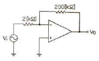
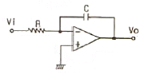
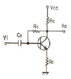
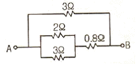
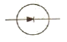
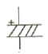
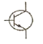
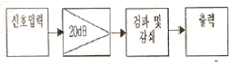
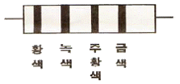
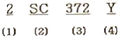

전자캐드기능사 (2008-03-30 기출문제)
1과목: 전기전자공학(대략구분)
1. 실효값이 60[㎐], 10[A]인 사인파 교류의 순시값 표시로 가장 적합한 것은?
- i=10 sin 120π t
- i=10√2 sin 337π t
- i=10√2 sin 120π t
- i=10 sin 377π t
(정답률: 71%)

2. 다음과 같은 연산증폭기의 전압증폭도 Av는 얼마인가?

- 50
- 100
- 200
- 400
(정답률: 73%)
3. 그림과 같은 연산 증폭기는 무슨 회로인가?

- 적분기
- 미분기
- 이상기
- 부호 변환기
(정답률: 57%)
4. 이상적인 연산증폭기의 특징으로 적합하지 않은 것은?
- 등가 입력 잡음 전력이 무한대이다.
- 대역폭(B)이 무한대이다.
- 전압이득(Av)이 무한대이다.
- 공통모드 제거비(CMRR)가 무한대이다.
(정답률: 48%)
5. 그림과 같은 트랜지스터 회로는 어떤 바이어스 회로인가?

- 고정바이어스
- 전압궤환바이어스
- 전류궤환바이어스
- 혼합바이어스
(정답률: 46%)
6. 변조도 60[%]의 진폭 변조 회로에서 반송파 평균 전력이 250[㎿]일 때 피변조파의 평균 전력은 몇 [㎿]인가?
- 150
- 250
- 295
- 345
(정답률: 44%)
7. 최대주파수편이 △fc가 75[㎑], 변조신호주파수 fs가 15[㎑]이면 변조지수 mf는 얼마인가?
- 0.2
- 5
- 10
- 15
(정답률: 69%)
8. 일반적인 반도체의 특성으로 적합하지 않은 것은?
- 불순물이 섞이면 저항이 증가한다.
- 매우 낮은 온도에서 절연체가 된다.
- 전기적 전도성은 금속과 절연체의 중간적 성질을 가지고 있다.
- 온도가 상승하면 저항이 감소한다.
(정답률: 53%)
9. 안정된 발진을 하기 위한 바크하우젠의 조건으로 가장 적합한 것은? (단, A는 증폭기의 증폭도, β는 궤환률이다.)
- ｜Aβ｜>1
- ｜Aβ｜<1
- ｜Aβ｜=0
- ｜Aβ｜=1
(정답률: 43%)
10. 내부저항이 2[Ω]인 1.5[V]용 전지에 3[Ω] 저항을 연결했을 때 흐르는 전류는 몇 [A]인가?
- 0.1[A]
- 0.3[A]
- 0.5[A]
- 0.75[A]
(정답률: 46%)
11. 어떤 도체에 0.1[A]의 전류가 1분동안 흐를 때 도체를 통과한 전하량은 몇 [C]인가?
- 0.1[C]
- 1[C]
- 6[C]
- 60[C]
(정답률: 72%)
12. 입력신호가 0.2[V]에서 2[V]로 증폭되었을 때 증폭도는 몇 [㏈]인가?
- 10[dB]
- 20[dB]
- 30[dB]
- 40[dB]
(정답률: 41%)
13. 다음 중 정류 작용하는 다이오드의 접합으로 가장 적합한 것은?
- PN 접합
- PNP 접합
- NPN 접합
- PNPN 접합
(정답률: 59%)
14. 20[A]의 전류를 흘렸을 때의 전력이 100[W]인 저항에 10[A]를 흘렸을 때의 전력은 얼마인가?
- 10[W]
- 25[W]
- 50[W]
- 100[W]
(정답률: 34%)
15. 다음과 같은 회로에서 A, B 양단에 30[V]의 전압을 가할 때 2[Ω]에 흐르는 전류는 얼마인가?

- 25[A]
- 15[A]
- 10[A]
- 9[A]
(정답률: 34%)
2과목: 전자계산기일반(대략구분)
16. 2n개의 입력 중에 선택 입력 n개를 이용하여 하나의 정보를 출력하는 조합회는?
- 디코더
- 인코더
- 멀티플렉서
- 디멀티플렉서
(정답률: 64%)
17. 데이터 전송 속도의 단위는?
- bit
- byte
- baud
- binary
(정답률: 60%)
18. I/O 장치와 주기억 장치를 연결하는 역할을 담당하는 부분은?
- bus
- buffer
- channel
- device
(정답률: 47%)
19. 마이크로프로세서의 구성 요소가 아닌 것은?
- 누산기
- 연산장치
- 입력장치
- 레지스터
(정답률: 56%)
20. 운영체제의 구성요소 중 제어 프로그램에 속하지 않는 것은?
- 감독 프로그램
- 작업관리 프로그램
- 데이터관리 프로그램
- 언어번역 프로그램
(정답률: 69%)
21. 다음 중 레지스터의 역할이 아닌 것은?
- 명령의 저장
- 데이터의 저장
- 주소의 저장
- 디코더 출력신호의 저장
(정답률: 61%)
22. 중앙처리장치와 주기억장치 사이의 속도 차이를 해결하기 위해 장치한 고속 버퍼 기억장치는?
- 캐시기억장치
- 주기억장치
- 보조기억장치
- 가상기억장치
(정답률: 81%)
23. 자기 보수화 코드(Self Complement Code)가 아닌 것은?
- Excess-3 Code
- 2421 Code
- 51111 Code
- Gray Code
(정답률: 61%)
24. 명령어의 기본적인 구성요소 2가지를 옳게 짝지은 것은?
- 기억장치와 연산장치
- 오퍼레이션 코드와 오퍼랜드
- 입력장치와 출력장치
- 제어장치와 논리장치
(정답률: 65%)
25. 논리식 F=A+A'ㆍB 와 같은 기능을 갖는 논리식은?
- AㆍB
- A+B
- A-B
- B
(정답률: 55%)
26. 다음 중 반도체 기억소자 ROM에 대한 설명으로 틀린 것은?
- 정보의 쓰기는 불가능하고 읽기만 가능하다.
- 기억내용을 수시로 바꾸어야 하는 곳에는 사용이 불가능하다.
- 전원이 나가면 기록된 정보는 소멸된다.
- 비휘발성 메모리이다.
(정답률: 61%)
27. 어떤 컴퓨터의 주기억장치 용량이 4096word로 구성되어 있고, word당 16bit라면 이 컴퓨터의 MAR은 몇 bit 레지스터인가?
- 8
- 12
- 16
- 4096
(정답률: 35%)
28. 제도에서 사용하는 길이의 단위로 옳은 것은?
- ㎜(밀리미터)
- ㎝(센티미터)
- m(미터)
- ㎞(킬로미터)
(정답률: 86%)
29. CAD 시스템을 사용하여 얻을 수 있는 특징이 아닌 것은?
- 도면의 품질이 좋아진다.
- 설계 과정에서 능률이 향상된다.
- 수치 결과에 대한 정확성이 증가한다.
- 도면 작성 시간이 길어서 원가가 절감된다.
(정답률: 85%)
30. 다음 전자부품 심벌 중 전해콘덴서의 심벌로 옳은 것은?



(정답률: 82%)
3과목: 전자제도(CAD) 이론(대략구분)
31. 반도체 소자의 동작 원리 중 반도체의 온도가 올라가면 반송자의 수가 증가하여 도전율이 증가하며 저항이 작아지는 소자, 즉 온도에 따라 저항 값이 변화하는 소자는?
- 다이오드(Diode)
- 배리스터(Varistor)
- 서미스터(Thermistor)
- 트랜지스터(Transistor)
(정답률: 54%)
32. PCB Artwork에서 부품을 꽂는 부분의 동박 면을 무엇이라 하는가?
- hole
- point
- pad
- line
(정답률: 66%)
33. 다음 중 설계 규칙을 검사하는 것은?
- Annotate
- DRC
- Netlist
- Export
(정답률: 73%)
34. 부품을 적정한 상태로 동작시키는데 필요한 기본적인 조건을 정격이라 하는데, 다음 중 정격에 속하지 않는 것은?
- 주파수
- 인가전압
- 임피던스
- 사용 장소의 온도, 습도
(정답률: 41%)
35. 다음 중 일반적인 PCB의 설계 및 제조 공정의 순서로 옳은 것은?
- 전자회로의 설계→PCB설계→PCB검사→PCB제조→제품출하
- 전자회로의 설계→PCB설계→PCB제조→PCB검사→제품출하
- PCB설계→전자회로의 설계→PCB검사→PCB제조→제품출하
- PCB설계→전자회로의 설계→PCB제조→PCB검사→제품출하
(정답률: 59%)
36. 전자 CAD에서 전기적 특성을 고려하지 않고 일반적인 도형작업으로 할 수 없는 기능은?
- 선 그리기
- 텍스트 쓰기
- 3차원 도형
- 원 그리기
(정답률: 67%)
37. 다음 그림과 같이 전자 제품의 전체적인 동작이나 기능을 간단한 기호나 직사각형과 문자로 그린 도면의 명칭은?

- 배치도
- 블록도
- 배선도
- 결합도
(정답률: 83%)
38. 인쇄회로기판(PCB)의 장점 중 옳지 않은 것은?
- 오 배선의 우려가 없다.
- 소형 경량화에 기여한다.
- 대량 생산의 효과가 높다.
- 소량 다품종 생산의 경우 제조 단가가 낮아진다.
(정답률: 79%)
39. 다음의 제도 용지의 규격 중 가장 큰 것은?
- A0
- A1
- A2
- A3
(정답률: 85%)
40. 회로기판이 움직여야 하는 경우나 부품의 삽입시 회로기판의 굴곡을 요하는 경우에 유연성이 있어야 하는데 폴리에스테르나 폴리이미드 필름에 동박을 접착한 얇은 필름으로 만든 기판은?
- 세라믹 인쇄회로기판
- 플렉시블 인쇄회로기판
- 유리에폭시 인쇄회로기판
- 콤퍼지트재 인쇄회로기판
(정답률: 77%)
41. 다음 중 전자통신기기의 패널을 설계 제도할 때 유의할 점으로 옳은 것은?
- 전원 코드는 전면에 배치한다.
- 조작상 서로 연관이 있는 요소끼리 근접 배치한다.
- 조작 빈도가 낮은 부품은 패널의 중앙이나 오른쪽에 배치한다.
- 장치에 외부 접속기가 있을 경우 반드시 패널의 위에 배치한다.
(정답률: 56%)
42. PCB 상에서 상호 연결되어 있는 신호, 모듈, 핀의 명칭으로 회로 도면상의 연결 정보를 무엇이라 하는가?
- Netlist
- Footprint
- Partlist
- Libraries
(정답률: 76%)
43. 인쇄회로기판이 갖추어야 할 특성으로 거리가 먼 것은?
- 온도 상승에 대하여 변화가 적어야 한다.
- 납땜시 가열 등에 의해서는 안정되어야 한다.
- 기계적 강도를 갖추고, 가공이 용이해야 한다.
- 공정 중 약물 처리에 대해 특성이 변화하여야 한다.
(정답률: 79%)
44. 다음 전자 캐드의 작업 과정 중 가장 나중에 하는 것은?
- 부품 배치
- 레이어 셋팅
- 거버파일 작성
- 네트리스트 작성
(정답률: 75%)
45. 그림과 같이 4색으로 표시되어 있을 때 저항값은?

- 25[㏀]
- 35[㏀]
- 45[㏀]
- 65[㏀]
(정답률: 78%)
46. 다음 중 CAD 시스템의 출력 장치가 아닌 것은?
- 스캐너(scanner)
- 필름 리코더(film recorder)
- 컬러 프린터(color printer)
- X-Y 플로터(plotter)
(정답률: 69%)
47. 세라믹 콘덴서의 외부에 104라는 숫자가 적혀있다. 이 콘덴서의 용량은?
- 1[μF]
- 0.1[μF]
- 0.01[μF]
- 0.001[μF]
(정답률: 63%)
48. 도면으로부터 위치 좌표를 읽어 들이고, 메뉴를 선택하여 도면 작업을 하는데 사용할 심벌 등을 메뉴에 등록시켜 놓고, 필요할 때 불러내어 그려 넣을 수 있도록 하는 장치는?
- 트랙 블(Track Ball)
- 디지타이저(digitizer)
- 펜 플로터(Pen Plotter)
- 이미지 스캐너(image Scanner)
(정답률: 71%)
49. 일반적으로 도면 관리시 도면 번호를 기입하는 부분은?
- 부품란
- 윤곽선
- 표제란
- 드로잉 뒷면
(정답률: 81%)
50. 다음 전자 부품 중 능동 부품으로 분류되는 것은?
- 저항
- 발진자
- 다이오드
- 코일
(정답률: 68%)
51. 트랜지스터 형식 명칭에 대한 설명으로 옳지 않은 것은?

- (1)은 소자의 종류를 의미한다.
- (2)는 반도체 소자로서 NPN형 저주파를 의미한다.
- (3)은 등록번호이며, 11부터 시작한다.
- (4)는 개량표시를 의미한다.
(정답률: 65%)
52. artwork 필름을 제작할 때, PCB 제조 공정에서의 치수 변화를 보정하는 작업을 무엇이라 하는가?
- repairing
- plotting
- scaling
- modifying
(정답률: 55%)
53. 능동 부품(active component)의 능동적 기능이라고 볼 수 없는 것은?
- 신호의 증폭
- 신호의 발진
- 신호의 변환
- 신호의 중계
(정답률: 76%)
54. 세븐 세그먼트(FND)가 동작할 때 빛을 내는 것은?
- 발광 다이오드
- 부저
- 릴레이
- 저항
(정답률: 88%)
55. 한국산업규격-국제표준화기구-국제전기표준회의에 대한 규격 기호 및 규격 명칭이 순서대로 옳게 연결한 것은?
- KS-ANSI-IEC
- KS-IT-ISO
- KS-ISO-IEC
- KS-ISO-JIS
(정답률: 83%)
56. 한국산업규격(KS)의 부분별 기호 중 옳지 않은 것은?
- KS B 기계
- KS C 전기
- KS D 전자
- KS E 광산
(정답률: 60%)
57. 다음 중 데이터 저장장치에 속하지 않는 것은?
- CRT
- HDD
- FDD
- CD-RW
(정답률: 61%)
58. 인쇄회로기판(PCB)을 설계할 때 기판 구성의 고려 사항이 아닌 것은?
- 부품 배치
- 부품의 단가
- 부품의 부착 간격
- 부품의 높이와 배열
(정답률: 79%)
59. 도면에서 도면의 축소나 확대, 복사의 작업과 이들의 복사 도면을 취급할 때 편의를 위하여 표시하는 것은?
- 윤곽선
- 도면의 비교눈금
- 도면의 구역
- 재단마크
(정답률: 62%)
60. 물체의 실체 길이와 도면에서 축소 또는 확대하여 그리는 길이의 비율을 척도라 한다. 다음 중 비례 관계가 아님을 뜻하며, 도면의 실물의 치수가 비례하지 않을 때 사용하는 것은?
- 배척
- NS
- 실척
- 축척
(정답률: 76%)
이유는 다음과 같습니다.
순시값은 최대값의 루트 2배가 됩니다. 따라서 최대값이 10[A]인 경우 순시값은 10√2[A]가 됩니다.
또한, 주파수는 60[㎐]이므로 각주기는 1/60[초]가 됩니다. 따라서 각속도는 120π[라디안/초]가 됩니다.
따라서, "i=10√2 sin 120π t"가 가장 적합한 표시입니다.